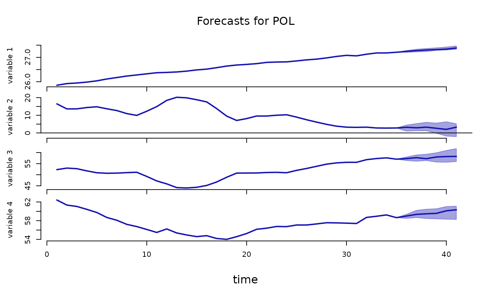

Plots of fitted values of dependent variables including their median and percentiles.
Arguments
- x
an object of class
ForecastsPANELobtained using theforecast()function containing posterior draws of fitted values of dependent variables.- which_c
a positive integer or a character string specifying the country for which the forecast should be plotted.
- probability
a parameter determining the interval to be plotted. The interval stretches from the
0.5 * (1 - probability)to1 - 0.5 * (1 - probability)percentile of the posterior distribution.- data_in_plot
a fraction value in the range (0, 1) determining how many of the last observations in the data should be plotted with the forecasts.
- col
a colour of the plot line and the ribbon
- main
an alternative main title for the plot
- xlab
an alternative x-axis label for the plot
- mar.multi
the default
marargument setting ingraphics::par. Modify with care!- oma.multi
the default
omaargument setting ingraphics::par. Modify with care!- ...
additional arguments affecting the summary produced.
Author
Tomasz Woźniak wozniak.tom@pm.me
Examples
specification = specify_bvarPANEL$new(ilo_dynamic_panel[1:5]) # specify the model
burn_in = estimate(specification, 10) # run the burn-in
#> **************************************************|
#> bpvars: Forecasting with Bayesian Panel VARs |
#> **************************************************|
#> Progress of the MCMC simulation for 10 draws
#> Every draw is saved via MCMC thinning
#> Press Esc to interrupt the computations
#> **************************************************|
posterior = estimate(burn_in, 10) # estimate the model
#> **************************************************|
#> bpvars: Forecasting with Bayesian Panel VARs |
#> **************************************************|
#> Progress of the MCMC simulation for 10 draws
#> Every draw is saved via MCMC thinning
#> Press Esc to interrupt the computations
#> **************************************************|
# forecast 5 years ahead
predictive = forecast(posterior, 6)
plot(predictive, which_c = "ARG") # plot forecasts
